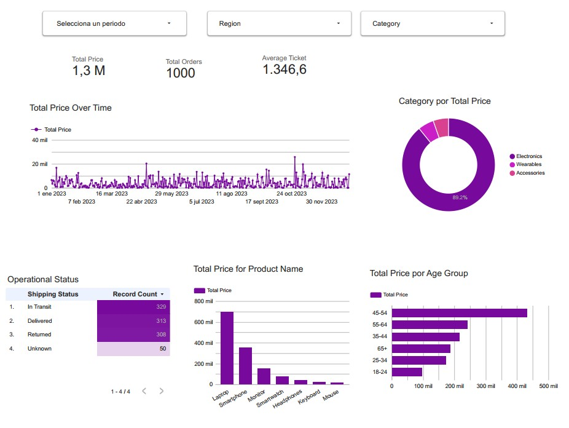

Dashboard de Inteligencia de Negocios para E-commerce
Looker Studio | Python | ETL | Data Visualization

Descripción del Proyecto
Desarrollo de una solución integral de análisis de datos para una plataforma de comercio electrónico. El proyecto abarcó desde la limpieza y transformación de datos (ETL) mediante Python hasta la creación de un panel de control interactivo en Looker Studio para la monitorización de KPIs críticos y el comportamiento del consumidor.
Responsabilidades y Acciones
Limpieza y Estructuración (ETL)
Procesamiento de un dataset de 1,000 registros para normalizar variables, gestionar valores nulos en regiones y estados de envío, y realizar ingeniería de funciones para segmentar clientes por rangos etarios.
import pandas as pd
# Cargar datos
df = pd.read_csv('realistic_e_commerce_sales_data.csv')
# 1. Limpieza de nulos
df['Region'] = df['Region'].fillna('Unknown')
df['Shipping Status'] = df['Shipping Status'].fillna('Unknown')
df['Age'] = df['Age'].fillna(df['Age'].median())
# 2. Crear grupos de edad para mejor visualización
bins = [18, 25, 35, 45, 55, 65, 100]
labels = ['18-24', '25-34', '35-44', '45-54', '55-64', '65+']
df['Age Group'] = pd.cut(df['Age'], bins=bins, labels=labels, right=False)
# 3. Guardar versión lista para Looker
df.to_csv('cleaned_e_commerce_sales_data.csv', index=False)Diseño de Dashboard
Configuración de una arquitectura de visualización jerárquica incluyendo métricas financieras, tendencias temporales y segmentación demográfica.
Análisis Predictivo y Descriptivo
Implementación de campos calculados para la obtención del ticket promedio y tasas de participación por categoría.
Logros y Análisis de Impacto (Insights)
-
Optimización Financiera
Visualización clara de ingresos por 1,3 M y un Ticket Promedio de 1.346,6, permitiendo identificar el alto valor de las transacciones.
-
Identificación de Producto Estrella
Determinación de que la categoría Electronics domina el 89,2% del mercado interno, con la Laptop como el principal motor de ingresos (superando los 700k).
-
Detección de Riesgos Operativos
Identificación crítica de una tasa de retorno del 30,8% (308 devoluciones de 1,000 órdenes), proporcionando una base de datos para futuras estrategias de mejora en calidad y logística.
-
Segmentación Estratégica
Análisis demográfico que reveló que el grupo de 45-54 años es el segmento con mayor poder adquisitivo, orientando futuros esfuerzos de marketing directo.